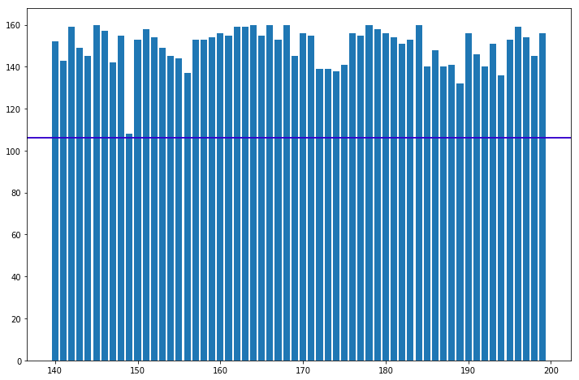
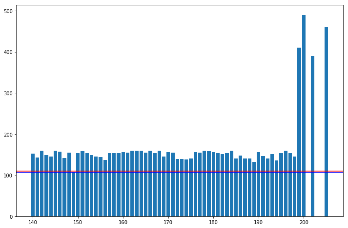
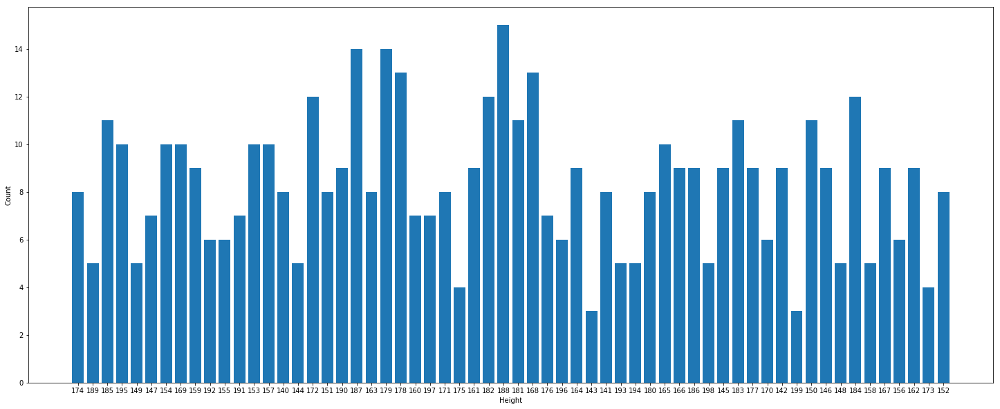

Descriptive Statistics: The Central Tendency Using Pandas¶
import numpy as np
import pandas as pd
import matplotlib.pyplot as plt
height_weight_data = pd.read_csv('datasets/500_Person_Gender_Height_Weight_Index.csv')
height_weight_data.head(5)
| Gender | Height | Weight | Index | |
|---|---|---|---|---|
| 0 | Male | 174 | 96 | 4 |
| 1 | Male | 189 | 87 | 2 |
| 2 | Female | 185 | 110 | 4 |
| 3 | Female | 195 | 104 | 3 |
| 4 | Male | 149 | 61 | 3 |
height_weight_data.drop('Index', inplace=True, axis=1)
height_weight_data.shape
(500, 3)
height_weight_data.isnull().sum()
Gender 0
Height 0
Weight 0
dtype: int64
min_height = height_weight_data['Height'].min()
min_height
140
max_height = height_weight_data['Height'].max()
max_height
199
min_weight = height_weight_data['Weight'].min()
min_weight
50
max_weight = height_weight_data['Weight'].max()
max_weight
160
range_of_height = max_height - min_height
range_of_height
59
range_of_weight = max_weight - min_weight
range_of_weight
110
weight = height_weight_data['Weight']
weight.head()
0 96
1 87
2 110
3 104
4 61
Name: Weight, dtype: int64
sorted_weight = weight.sort_values().reset_index(drop=True)
sorted_weight.head()
0 50
1 50
2 50
3 50
4 50
Name: Weight, dtype: int64
def mean(data):
num_elements = len(data)
print('Number of elements: ', num_elements)
weight_sum = data.sum()
print('Sum: ', weight_sum)
return weight_sum / num_elements
def median(data):
num_elements = len(data)
if(num_elements % 2 == 0):
return (data[(num_elements / 2) - 1] + data[(num_elements / 2)]) / 2
else:
return (data[((num_elements + 1) / 2) - 1])
mean(height_weight_data['Weight'])
Number of elements: 500
Sum: 53000
106.0
weight_mean = height_weight_data['Weight'].mean()
weight_mean
106.0
median(height_weight_data['Weight'])
79.5
median(sorted_weight)
106.0
weight_median = height_weight_data['Weight'].median()
weight_median
106.0
plt.figure(figsize=(12, 8))
height_weight_data['Weight'].hist(bins=30)
plt.axvline(weight_mean, color='r', label='mean')
plt.legend()
<matplotlib.legend.Legend at 0x10f0ef128>
plt.figure(figsize=(12, 8))
height_weight_data['Weight'].hist(bins=30)
plt.axvline(weight_median, color='g', label='median')
plt.legend()
<matplotlib.legend.Legend at 0x10f5209b0>
plt.figure(figsize=(12, 8))
plt.bar(height_weight_data['Height'], height_weight_data['Weight'])
plt.axhline(weight_mean, color='r', label='mean')
plt.axhline(weight_median, color='b', label='median')
plt.show()

height_weight_data
| Gender | Height | Weight | |
|---|---|---|---|
| 0 | Male | 174 | 96 |
| 1 | Male | 189 | 87 |
| 2 | Female | 185 | 110 |
| 3 | Female | 195 | 104 |
| 4 | Male | 149 | 61 |
| 5 | Male | 189 | 104 |
| 6 | Male | 147 | 92 |
| 7 | Male | 154 | 111 |
| 8 | Male | 174 | 90 |
| 9 | Female | 169 | 103 |
| 10 | Male | 195 | 81 |
| 11 | Female | 159 | 80 |
| 12 | Female | 192 | 101 |
| 13 | Male | 155 | 51 |
| 14 | Male | 191 | 79 |
| 15 | Female | 153 | 107 |
| 16 | Female | 157 | 110 |
| 17 | Male | 140 | 129 |
| 18 | Male | 144 | 145 |
| 19 | Male | 172 | 139 |
| 20 | Male | 157 | 110 |
| 21 | Female | 153 | 149 |
| 22 | Female | 169 | 97 |
| 23 | Male | 185 | 139 |
| 24 | Female | 172 | 67 |
| 25 | Female | 151 | 64 |
| 26 | Male | 190 | 95 |
| 27 | Male | 187 | 62 |
| 28 | Female | 163 | 159 |
| 29 | Male | 179 | 152 |
| ... | ... | ... | ... |
| 470 | Male | 147 | 142 |
| 471 | Male | 154 | 112 |
| 472 | Female | 178 | 65 |
| 473 | Male | 195 | 153 |
| 474 | Female | 167 | 79 |
| 475 | Male | 183 | 131 |
| 476 | Female | 164 | 142 |
| 477 | Male | 167 | 64 |
| 478 | Female | 151 | 55 |
| 479 | Female | 147 | 107 |
| 480 | Female | 155 | 115 |
| 481 | Female | 172 | 108 |
| 482 | Female | 142 | 86 |
| 483 | Male | 146 | 85 |
| 484 | Female | 188 | 115 |
| 485 | Male | 173 | 111 |
| 486 | Female | 160 | 109 |
| 487 | Male | 187 | 80 |
| 488 | Male | 198 | 136 |
| 489 | Female | 179 | 150 |
| 490 | Female | 164 | 59 |
| 491 | Female | 146 | 147 |
| 492 | Female | 198 | 50 |
| 493 | Female | 170 | 53 |
| 494 | Male | 152 | 98 |
| 495 | Female | 150 | 153 |
| 496 | Female | 184 | 121 |
| 497 | Female | 141 | 136 |
| 498 | Male | 150 | 95 |
| 499 | Male | 173 | 131 |
500 rows × 3 columns
listOfSeries = [pd.Series(['Male', 205, 460], index=height_weight_data.columns ),
pd.Series(['Female', 202, 390], index=height_weight_data.columns ),
pd.Series(['Female', 199, 410], index=height_weight_data.columns ),
pd.Series(['Male', 202, 390], index=height_weight_data.columns ),
pd.Series(['Female', 199, 410], index=height_weight_data.columns ),
pd.Series(['Male', 200, 490], index=height_weight_data.columns )]
height_weight_updated = height_weight_data.append(listOfSeries , ignore_index=True)
height_weight_updated.tail()
| Gender | Height | Weight | |
|---|---|---|---|
| 501 | Female | 202 | 390 |
| 502 | Female | 199 | 410 |
| 503 | Male | 202 | 390 |
| 504 | Female | 199 | 410 |
| 505 | Male | 200 | 490 |
updated_weight_mean = height_weight_updated['Weight'].mean()
updated_weight_mean
109.78260869565217
weight_mean
106.0
updated_weight_median = height_weight_updated['Weight'].median()
updated_weight_median
106.5
weight_median
106.0
plt.figure(figsize=(12, 8))
plt.bar(height_weight_updated['Height'], height_weight_updated['Weight'])
plt.axhline(updated_weight_mean, color='r', label='mean')
plt.axhline(updated_weight_median, color='b', label='median')
plt.show()

plt.figure(figsize=(12, 8))
height_weight_data['Weight'].hist(bins=20)
plt.axvline(updated_weight_mean, color='r', label='mean')
plt.axvline(updated_weight_median, color='g', label='median')
plt.legend()
<matplotlib.legend.Legend at 0x11239bb00>
plt.figure(figsize=(12, 8))
height_weight_updated['Weight'].hist(bins=100)
plt.axvline(updated_weight_mean, color='r', label='mean')
plt.axvline(updated_weight_median, color='g', label='median')
plt.legend()
<matplotlib.legend.Legend at 0x11277db00>
height_counts = {}
for p in height_weight_data['Height']:
if p not in height_counts:
height_counts[p] = 1
else:
height_counts[p] += 1
height_counts
{174: 8,
189: 5,
185: 11,
195: 10,
149: 5,
147: 7,
154: 10,
169: 10,
159: 9,
192: 6,
155: 6,
191: 7,
153: 10,
157: 10,
140: 8,
144: 5,
172: 12,
151: 8,
190: 9,
187: 14,
163: 8,
179: 14,
178: 13,
160: 7,
197: 7,
171: 8,
175: 4,
161: 9,
182: 12,
188: 15,
181: 11,
168: 13,
176: 7,
196: 6,
164: 9,
143: 3,
141: 8,
193: 5,
194: 5,
180: 8,
165: 10,
166: 9,
186: 9,
198: 5,
145: 9,
183: 11,
177: 9,
170: 6,
142: 9,
199: 3,
150: 11,
146: 9,
148: 5,
184: 12,
158: 5,
167: 9,
156: 6,
162: 9,
173: 4,
152: 8}
plt.figure(figsize=(25, 10))
x_range = range(len(height_counts))
plt.bar(x_range, list(height_counts.values()), align='center')
plt.xticks(x_range, list(height_counts.keys()))
plt.xlabel('Height')
plt.ylabel('Count')
plt.show()

count = 0
size = 0
for s, c in height_counts.items():
if count < c:
count = c
size = s
print('Size: ', size, '\nFrequency: ', count)
Size: 188
Frequency: 15
height_weight_data['Height'].mode()
0 188
dtype: int64
height_weight_data['Weight'].mode()
0 50
1 80
2 104
dtype: int64
height_mean = height_weight_data['Height'].mean()
height_median = height_weight_data['Height'].median()
height_mode = height_weight_data['Height'].mode().values[0]
plt.figure(figsize=(12, 8))
height_weight_data['Height'].hist()
plt.axvline(height_mean, color='r', label='mean')
plt.axvline(height_median, color='g', label='median')
plt.axvline(height_mode, color='y', label='mode')
plt.legend()
<matplotlib.legend.Legend at 0x11228a278>